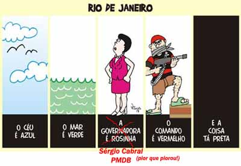

Reciclando uma velha "piada" que circulou há alguns anos, com os nomes reais para quem não conhece o Rio saber:Por Decreto-lei do Governo do Estado do Rio de Janeiro, os Bairros e algumas localidades vão mudar de nome, a começar pelo da própria (ex) Cidade Maravilhosa que passará a se chamar Tiro de Janeiro...
Os bairros serão:
- Jardim do Pânico (Jardim Botânico);
- Lebronx (Leblon);
- Coca-bacana (Copacabana);
- Barra Pesada da Tijuca (Barra da Tijuca);
- Passafogo (Botafogo);
- Recreio dos Traficantes (Recreio dos Bandeirantes);
- Ilha do Seqüestrador (Ilha do Governador);
- Assalto da Boa vista (Alto da Boa Vista);
- Piedade! Não me Mate! (Piedade);
- Largo do Metralha (Largo do Mendanha);
- Corre, Velho! (Cosme Velho);
- Maria Desgraça (Maria da Graça);
- Del Gatilho (Del Castilho);
- Tirojuca (Tijuca);
- Atiraí (Andaraí);
- Tiro comprido (Rio Comprido);
- Bem-não-fica (Benfica);
- Estácio-nou, perdeu (Estácio);
- Cacetete (Catete);
- Modureza (Madureira);
- Senador morrerá (Senador Camará);
- Honório Cruel (Honório Gurgel);
- Ilha de Bagdá (Ilha de Paquetá);
- Cidade Cova (Cidade Nova);
- Jerusaleme (Leme);
- Irajaque (Irajá);
- Gaza-tiba (Guaratiba);
- São Encurralado (São Conrado);
- Roubalengo (Realengo);
- Engenho de dentro da bala (Engenho de Dentro);
- Jacareparapapapapatibum (Jacarepaguá);